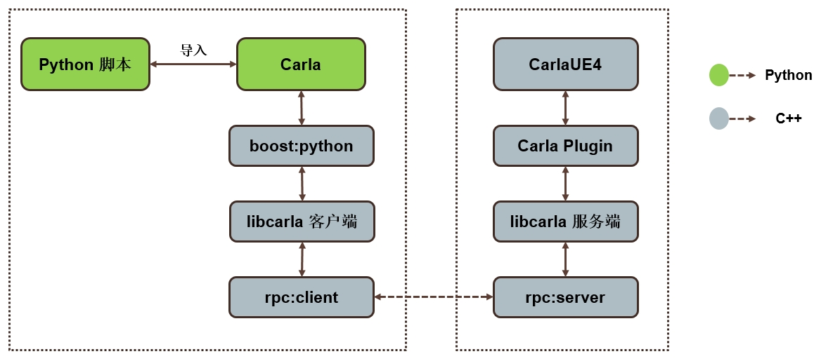

Carla

重要
本文档参考最新版本的 Carla。有关以前版本的文档，请在右下角看到此按钮的位置选择所需的版本： 
Carla 是一款开源自动驾驶仿真器。它是从头开始构建的，作为一个模块化且灵活的 API，可以解决自动驾驶问题中涉及的一系列任务。Carla 的主要目标之一是帮助自动驾驶研发民主化，成为用户可以轻松访问和定制的工具。为此，仿真器必须满足一般驾驶问题中不同用例的要求（例如学习驾驶策略、训练感知算法等）。Carla 基于虚幻引擎来运行仿真，并使用 OpenDRIVE 标准（目前为 1.4）来定义道路和城市设置。对仿真的控制是通过 Python 和 C++ 处理的 API 授予的，该 API 随着项目的发展而不断增长。
为了顺利开发、训练和验证驾驶系统的过程，Carla 发展成为一个由社区围绕主平台构建的项目生态系统。在这种情况下，了解 Carla 的工作原理非常重要，这样才能充分理解其功能。
仿真器
Carla 仿真器由可扩展的客户端-服务器架构组成。 服务器负责与仿真本身相关的所有事情：传感器渲染、物理计算、世界状态及其参与者的更新等等。由于它的目标是实际结果，因此最合适的选择是使用专用 GPU 运行服务器，尤其是在处理机器学习时。 客户端由一组客户端模块组成，控制场景中演员的逻辑并设置世界条件。这是通过利用 Carla API（Python 或 C++ 语言）来实现的，Carla API 是服务器和客户端之间的中介层，不断发展以提供新功能。

这总结了仿真器的基本结构。然而，了解 Carla 的意义远不止于此，因为它共存了许多不同的功能和元素。下面列出了其中一些，以便了解 Carla 可以实现的功能。
- 交通管理器。 一种内置系统，除了用于学习的车辆外，还可以控制车辆。它充当 Carla 提供的指挥，以现实的行为重建类似城市的环境。
- 传感器。 车辆依靠它们来分发周围环境的信息。在 Carla 中，它们是附着在车辆上的特定类型的参与者，可以检索和存储它们接收到的数据以简化流程。目前该项目支持不同类型的技术，从摄像头到雷达、激光雷达等等。
- 记录器。 此功能用于为世界上的每个参与者逐步重演仿真。它允许访问世界上任何地方的时间线中的任何时刻，这是一个很棒的追踪工具。
- ROS 桥和 Autoware 实现。 作为普遍化的问题，Carla 项目致力于将仿真器集成到其他学习环境中。
- 开放资产。 Carla 为城市环境提供了不同的地图，可以控制天气条件，并提供一个包含大量参与者的蓝图库。然而，这些元素可以定制，并且可以按照简单的指导原则生成新元素。
- Scenario runner. 为了简化车辆的学习过程，Carla 提供了一系列描述不同情况的迭代路线。这些也为 Carla 挑战 奠定了基础，每个人都可以测试他们的解决方案并跻身排行榜。
该项目
Carla 快速稳定地发展，扩大了提供的解决方案范围，并为不同的自动驾驶方法开辟了道路。它在这样做的同时永远不会忘记其开源性质。该项目是透明的，充当一个白盒，任何人都可以访问工具和开发社区。Carla 正是在民主化中找到了自己的价值。 谈论 Carla 如何成长意味着谈论一个共同深入研究自动驾驶彻底问题的开发人员社区。每个人都可以自由地与 Carla 一起探索，找到自己的解决方案，然后与社区其他成员分享他们的成就。
本文档将成为您一路上的伴侣。下一页包含 快速入门 说明，供那些渴望安装 Carla 版本的人使用。还有适用于 Linux 和 Windows 的构建指南。这将使 Carla 从存储库中出来，并允许深入了解其功能。
欢迎来到 Carla。